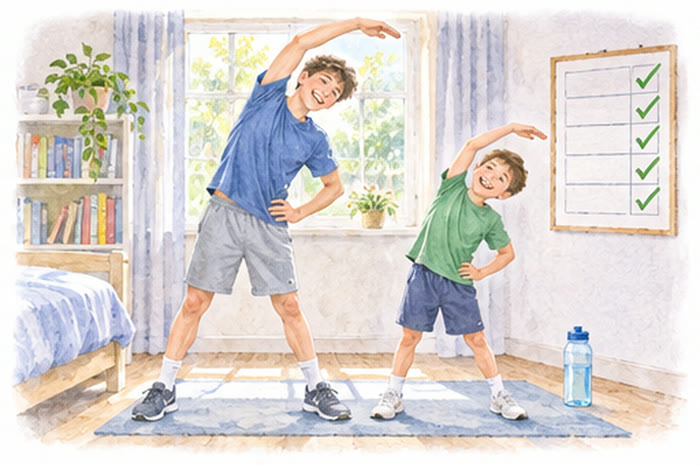

Listen to the text
Speed:

In February our Biology teacher gave us an unusual project. For twenty-one days we had to keep a habit diary. Each of us chose one bad habit to drop and one good habit to start. I chose "no sweet drinks" and "ten minutes of exercise every morning". Day 1. I am full of energy. I did my exercises and drank only water. It is easy! Day 3. It is not easy. Everybody in the canteen is drinking lemonade. I am drinking water and feeling like a hero. A sad hero. Day 6. I forgot to exercise in the morning, so I did it in the evening. Does it count? I decided that it does. Day 9. I had a terrible day. I got a bad mark and bought a cola. I drank half and felt guilty. The teacher says that one mistake doesn't destroy a habit. Giving up does. Day 12. I have noticed that I don't want sweet drinks so much. Water tastes normal now. Strange. Day 15. My little brother has started exercising with me. He does everything wrong, but he is very serious. Day 18. I am used to my ten minutes. If I skip them, something is missing. Day 21. The last day. I have done exercises on twenty days out of twenty-one. I have had one and a half sweet drinks in three weeks. I used to have two a day. In class we compared our diaries. Out of twenty-eight students, nineteen finished the project. "Now you know the secret," said the teacher. "A habit is not built by one big decision. It is built by twenty-one small ones." I am on day forty-three now. Nobody is checking.
Tap any sentence to hear it again.
Сподобалось? На сайті ще більше матеріалів для вчителів!
Reader, презентації, ігри, діагностичні та контрольні роботи до підручників 1-11 класів.
Перейти на сайт materials.allaenglish.com